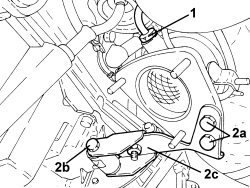
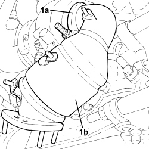
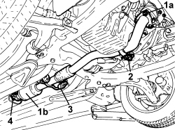
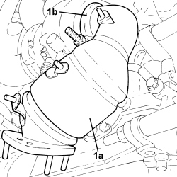
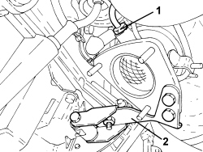

1080B62 CATALYTIC CONVERTER - R + R
- Path
- Procedures > 10 ENGINE > 1080 EMISSION CONTROL SYSTEM > 1080B EXHAUST EMISSION CONTROL SYSTEM > 1080B62 CATALYTIC CONVERTER - R + R
- Kind
- repair procedure (removal / refitting; the operation number is the code)
- Applies to
- engines: 1.9 JTD 8v, 1.9 JTD 16v, 2.4 JTD 20v; all production periods
- Interactive page
- https://sloeber94.github.io/elrnDB-fCrm/en/#/194002188
Applies to: engines: 1.9 JTD 8v, 1.9 JTD 16v; all production periods
 Removing
Removing
 Refitting
Refitting1.9 JTD 8v VERSION AND 1.9 JTD 16v VERSION WITH DPF
- Position the vehicle on a lift.
Op. 1016A10 SOUND-PROOFING COVER - R.R
Op. 5530B52 BATTERY SUPPORT/DRIP TRAY - R.R
Op. 1048B19 TURBOCHARGER AIR OUTLET HOSE -R.R.
Op. 1048A42 SLEEVE FROM FLOW METER TO TURBO CHARGER AIR INLET PIPE - R + R
Op. 7055B54 UNDER ENGINE PROTECTION/GUARD - R.R.
Op. 1048A50 TURBOCHARGER AIR INTAKE PIPE - R.R.
Op. 1048A10 AIR FILTER ASSEMBLY - R.R.
Op. 1084A16 OIL DIPSTICK PIPE - R.R
Op. 1088D24 WATER PUMP RIGID COOLANT INLET PIPE - R.R.
Op. 1072C44 EXHAUST MANIFOLD HEAT SHIELD - R+R
Op. 1076B72 INTERMEDIATE EXHAUST PIPE WITH HOSE SECTION - R+R
1. Undo the catalytic converter overheating thermal coupling and remove it.
2. Undo the bolts (2a), (2b) and remove the catalytic converter mounting bracket (2c).

Applies to: engines: 1.9 JTD 8v, 1.9 JTD 16v; all production periods
1. Loosen the collar (1a) and remove catalytic converter (1b).

Applies to: engines: 1.9 JTD 8v, 1.9 JTD 16v; all production periods
1.9 JTD 8v VERSION AND 1.9 JTD 16v VERSION WITHOUT DPF
Op. 7055B54 UNDER ENGINE PROTECTION/GUARD - R.R.
1. Undo the nuts (1a) fixing the catalytic converter (1b) to the catalytic preconverter.
2. Undo the nuts securing the intermediate mounting bracket.
3. Disconnect the catalytic converter flexible mountings.
4. Loosen the collar securing the catalytic converter (1b) to the front exhaust silencer.

Applies to: engines: 1.9 JTD 8v, 1.9 JTD 16v; all production periods
Refitting
Removing1.9 JTD 8v VERSION AND 1.9 JTD 16v VERSION WITH DPF
1. Place the catalytic conveter (1a) in its housing and fasten it tightening the collar (1b) to the recommended torque.
Component | Fastening | dia | Value (daNm) | Validity |
|---|---|---|---|---|
Catalytic converter | Collar nut | M10 | (turbocharger and exhaust manifold side) 2.2 - 2.6 | 1.9 JTD 16v 1.9 JTD 8v 2.4 JTD 20v |

Applies to: engines: 1.9 JTD 8v, 1.9 JTD 16v; all production periods
1. Place the catalytic conveter mounting bracket in its housing and secure it using the bolts.
2. Position the catalytic converter overheating thermal coupling in its housing and tighten it to the recommended torque.
Component | Fastening | dia | Value (daNm) | Validity |
|---|---|---|---|---|
Thermal coupling signalling catalytic converter overheating | - | M14x1.5 | (catalytic converter side) 4.5 | 1.9 JTD 16v 1.9 JTD 8v 2.4 JTD 20v |

Applies to: engines: 1.9 JTD 8v, 1.9 JTD 16v; all production periods
Op. 1076B72 INTERMEDIATE EXHAUST PIPE WITH HOSE SECTION - R+R
Op. 1072C44 EXHAUST MANIFOLD HEAT SHIELD - R+R
Op. 1088D24 WATER PUMP RIGID COOLANT INLET PIPE - R.R.
Op. 1084A16 OIL DIPSTICK PIPE - R.R
Op. 1048A10 AIR FILTER ASSEMBLY - R.R.
Op. 1048A50 TURBOCHARGER AIR INTAKE PIPE - R.R.
Op. 7055B54 UNDER ENGINE PROTECTION/GUARD - R.R.
Op. 1048A42 SLEEVE FROM FLOW METER TO TURBO CHARGER AIR INLET PIPE - R + R
Op. 1048B19 TURBOCHARGER AIR OUTLET HOSE -R.R.
Op. 5530B52 BATTERY SUPPORT/DRIP TRAY - R.R
Op. 0010T20 ENGINE COOLANT - CHANGE
Op. 1016A10 SOUND-PROOFING COVER - R.R
- Remove the vehicle from the lift.
Applies to: engines: 1.9 JTD 8v, 1.9 JTD 16v; all production periods
1.9 JTD 8v VERSION AND 1.9 JTD 16v VERSION WITHOUT DPF
- Place the catalytic converter back in its housing and fasten it to the catalytic preconverter using the nuts.
- Connect the catalytic converter to the front exhaust silencer and fasten it using the collar.
- Connect the catalytic converter to the flexible mountings.
Applies to: engines: 2.4 JTD 20v; all production periods
- On this version it is not possible to remove/refit the catalytic converter on the car.
To perform this operation, remove/refit the power unit
Op. 1004B14 POWER UNIT WITH AUTOMATIC TRANSMISSION R + R
and then work at the bench, customising the engine service procedures for this operation.
Topics linked from this page (14)
- 0010T20 ENGINE COOLANT - CHANGE
- 1004B14 POWER UNIT WITH AUTOMATIC TRANSMISSION R + R
- 1016A10 SOUND-PROOFING COVER - R.R
- 1048A10 AIR FILTER ASSEMBLY - R.R.
- 1048A42 SLEEVE FROM FLOW METER TO TURBO CHARGER AIR INLET PIPE - R + R
- 1048A50 TURBOCHARGER AIR INTAKE PIPE - R.R.
- 1048B19 TURBOCHARGER AIR OUTLET HOSE -R.R.
- 1072C44 EXHAUST MANIFOLD HEAT SHIELD - R+R
- 1076B72 INTERMEDIATE EXHAUST PIPE WITH HOSE SECTION - R+R
- 1084A16 OIL DIPSTICK PIPE - R.R
- 1088D24 WATER PUMP RIGID COOLANT INLET PIPE - R.R.
- 5530B10 BATTERY - R+R
- 5530B52 BATTERY SUPPORT/DRIP TRAY - R.R
- 7055B54 UNDER ENGINE PROTECTION/GUARD - R.R.